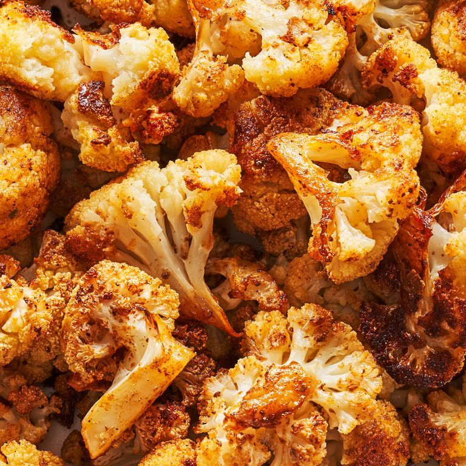

Arnabeet

Description
Aleppo Poor People Dish. Also childhood dish for me and easy to make.
Ingredients
- Minced beef
- Onion
- Cauliflower
- Salt and peppar
- Olive oil
- Arabic bread
- Turkish yoghurt
Steps:
- Oil up Cauilflowers and set in oven
- Fry beef with salt, peppar and Onion(?)
- Mix up the meat with the Cauliflowers
- Make yoghurt with garlic
- Eat with arabic bread